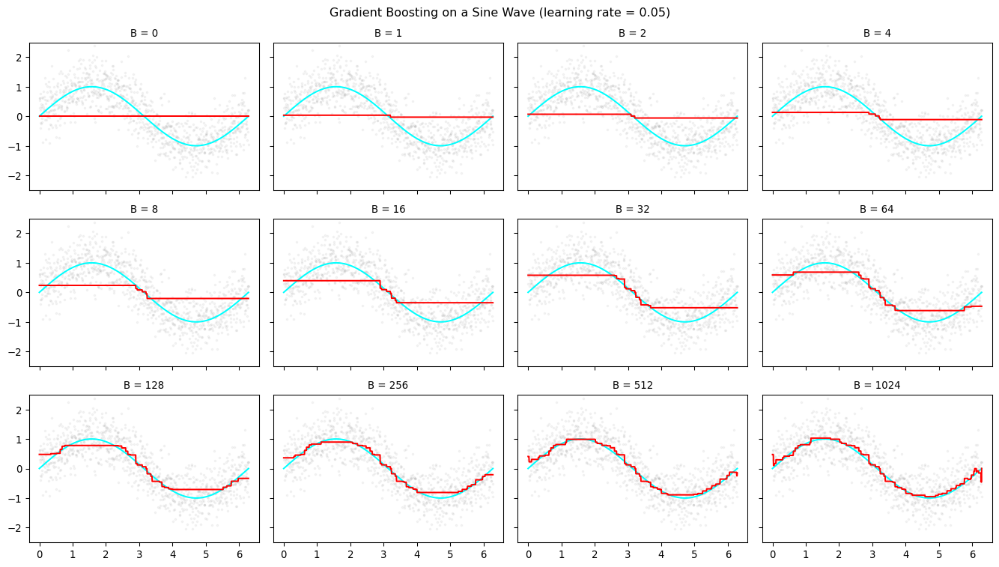

MATH 4025: Boosting
Concept Check
- What is an ensemble method?
- What was the primary difference between bagging and random forests?
- Do bagging and random forests primarily reduce bias, variance, or both over a single decision tree (without pruning)?
- What is a residual?
- Today: Boosting — a fundamentally different ensemble strategy
Flexibility vs. Interpretability

Adapted from ISLR, James et al.
Boosting
Boosting
- Still an ensemble method (build lots of trees) but
- Trees are created sequentially, not in parallel
- Each new tree is fit to the residuals of the current ensemble
- Idea: each additional tree improves on the places where the previous trees perform poorly
- Each individual tree is a weak learner (often a shallow “stump”)
- Learning slowly: as more trees are added, the ensemble gradually improves
Boosting Algorithm
Let \(B\) = number of trees, \(\lambda\) = learning rate, \(d\) = max splits per tree
- Set \(\hat{f}(x) = 0\) and residuals \(r_i = y_i\) for all training observations
- For \(b = 1, \ldots, B\):
- Fit a shallow tree \(\hat{f}_b\) with \(d\) splits to the residuals \(r\)
- Update the ensemble: \(\hat{f}(x) \leftarrow \hat{f}(x) + \lambda \hat{f}_b(x)\)
- Update residuals: \(r_i \leftarrow r_i - \lambda \hat{f}_b(x_i)\)
- Output the final model: \[\hat{f}(x) = \displaystyle \sum_{b=1}^{B} \lambda \, \hat{f}_b(x)\]
- This iterative residual-fitting is equivalent to gradient descent on the SSE, hence gradient boosting
Boosting Visualization

Common Boosting Implementations (Python)
Lot’s of different boosting algorithms and implementations, but some ofthe most popular are:
- AdaBoost - original boosting algorithm; re-weights misclassified observations rather than fitting residuals
- GradientBoosting - flexible reference implementation; supports many loss functions; slow on large data
- HistGradientBoostingClassifier - histogram-based, very fast; handles missing values natively; inspired by LightGBM
- XGBoost - regularized gradient boosting; uses second order information in updates; dominant in competitions and production;
- First three available in
sklearn.ensemble, last one viaxgboostpackage
- First three available in
Comparing Implementations
| AdaBoost | GradientBoosting | HistGradientBoosting | XGBoost | |
|---|---|---|---|---|
| Speed | Slow | Slow | Fast | Very fast |
| Large datasets | No | No | Yes | Yes |
| Handles Numeric Missing values (natively) | No | No | Yes | Yes |
| L1 / L2 regularization | No | No | No | Yes |
| GPU support | No | No | No | Yes |
| Extra install | No | No | No | xgboost package |
Key Tuning Parameters
Every implementation has a whole host of tuning parameters, but two are common to all:
| Parameter | Effect |
|---|---|
| Number of trees | More trees \(\rightarrow\) lower bias, risk of overfitting |
| Learning rate | Smaller \(\rightarrow\) slower learning, need more trees |
- learning rate and number of trees interact strongly: shrink one, increase the other
- If tuning a lot of parameters, use a random search (irregular grid) to efficiently explore this high-dimensional space
Boosting in Python
Practice!
I’ve uploaded a new notebook slides-21-practice.ipynb with a complete example of using AdaBoost, GradientBoosting, HistGradientBoosting and XGBoost on the voter dataset. We’ll focus on the XGBoost section in the slides, but feel free to explore the other implementations on your own time!
Be careful! Some of the cells will take between 10-20 minutes to run.
Using XGBoost
- Install:
xgboostimport asfrom xgboost import XGBClassifierorXGBRegressor - Fully compatible with scikit-learn: works inside
Pipeline,GridSearchCV,RandomizedSearchCV, etc. - Handles missing values natively - no imputation needed for numeric features
- Built-in L1 and L2 regularization (
alpha,lambda) - Key parameters to tune:
n_estimators,learning_rate,max_depth,min_child_weight
Define the Pipeline
Open slides-21-practice.ipynb and run the Setup cell, then the Define Pipeline cell.
- We wrap
XGBClassifierin the same pipeline pattern used for bagging and random forests - The
preproc_votertransformer handles encoding; thebooststep handles the rest - Note:
xgboostrequires that the response variable be encoded as integers
Random Search
Run the Random Search cell.
- We search over four hyperparameters simultaneously:
n_estimators: number of trees (50–400)learning_rate: log-uniform between 0.001 and 0.5max_depth: tree depth (2–10)min_child_weight: minimum leaf weight (1–20)
n_iter=50means we evaluate 50 random combinations — much more efficient than a full grid- 5-fold stratified cross-validation, scored by accuracy
Fit the Search
Run the Fit cell.
- This will take a few minutes with
n_iter=50 - Increasing
n_itergives a better search but takes proportionally longer
CV Results
Run the CV Results cell.
- Scatter plot: x-axis =
learning_rate(log scale), y-axis = CV accuracy, color =max_depth - What patterns do you notice?
- Is there an optimal learning rate range?
- Do deeper trees do better or worse at low learning rates?
Best Parameters
Run the Best Parameters cell.
- Which hyperparameter values did the search converge on?
- Does a small learning rate pair with a large
max_iter, as the theory predicts?
Test Set Evaluation
Run the Test Set Evaluation cells.
- Compare the test accuracy to the random forest result from lecture 19
- Look at the confusion matrix: which voter category is hardest to classify?
- Does boosting make fewer or more errors on rare classes than random forests?
Variable Importance
Run the Variable Importance cells.
XGBClassifierprovidesfeature_importances_(MDI-based) after fitting- Compare the top 20 features to the random forest importance plot from lecture 20:
- Do the same features dominate?
- Does the ranking change?
- Discussion: why might boosting weight features differently than a random forest?
Conceptual Questions
- How does boosting’s sequential approach differ from bagging’s parallel approach?
- Why does a small
learning_rateoften lead to better generalization? - At what point does adding more trees stop helping (or start hurting)?
Comparing Ensemble Methods
| Bagging | Random Forest | Boosting | |
|---|---|---|---|
| Tree construction | Parallel | Parallel | Sequential |
| Tree type | Full trees | Full trees | Shallow trees |
| Variance reduction | Via averaging | Via decorrelation | Via slow learning |
| Bias reduction | Minimal | Minimal | Iterative |
| Key tuning params | n_estimators |
max_features |
learning_rate, n_estimators, max_depth |
| Overfitting risk | Low | Low | Higher (careful tuning needed) |
Recap
What is boosting?
- An ensemble of weak learners built sequentially: each tree corrects the errors of the previous ones
- Equivalent to gradient descent on a loss function — hence “gradient boosting”
Key ideas to remember
learning_rateand number of trees interact: a smaller rate needs more trees- Boosting can overfit if trees are too deep or too many — tuning matters more than in random forests
HistGradientBoostingandXGBoosthandle missing numeric values natively (no imputation needed)
Which implementation to use?
- Learning / small data:
GradientBoostingClassifier— easy to understand, no extra install - Speed + missing values:
HistGradientBoostingClassifier— fast, sklearn-native - Production / competitions:
XGBoost— regularization, GPU support, widely used